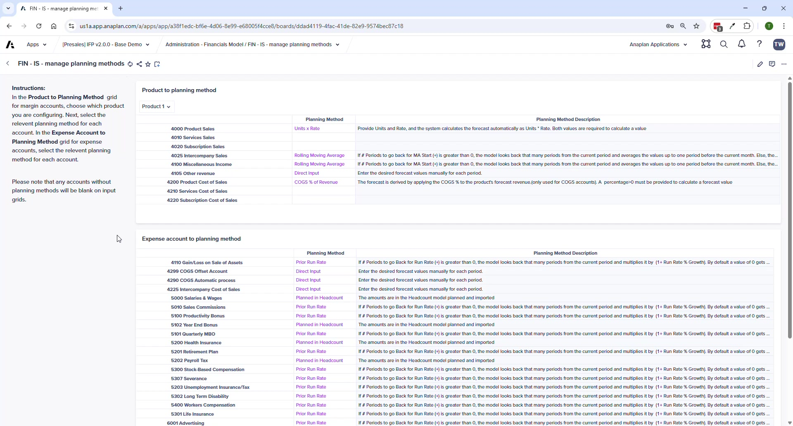

Operating Expenses
Planning methods, line item detail, allocations, and cross-model imports
Module 3Module Walkthrough20 min
Key Capabilities
- One method per account — applies uniformly across all entities and departments (changed from v1.x)
- Accounts set to "Planned in Headcount" or "Planned in CapEx" are hidden from the OpEx planning grid
- Progressive Disclosure shows only relevant inputs for the selected method
Available Planning Methods
| Method | Description | Key Input |
|---|---|---|
| Prior Run Rate | Prior period × (1 + growth %) | Growth %, # periods to go back, $ adjustment |
| Units x Rate | Units × rate | Units (e.g., hours), Rate, Adjustment |
| Rolling Moving Average | Average of N prior periods | # periods for average |
| Direct Input | Manual monthly entry | Enter amounts directly |
| $ Amount Growth | Prior period + $ growth amount | Growth amount |
| Fixed Average | Fixed average over N periods | # periods |
| Line Item Detail | Amounts from Line Item Detail page | Entered on Line Item Detail page |
| Planned in CapEx | Auto from CE model — data entry disabled | (none) |
| Planned in Headcount | Auto from HC model — data entry disabled | (none) |

⚠ Cross-Model Imports
After changes in HC or CapEx models, you MUST run FIN – Import from HC Model and FIN – Import from CapEx Model. Data does NOT sync automatically. If OpEx values don't reflect HC or CapEx updates, this is always the first thing to check.
Line Item Detail
- Enter description, then specify extra dimensions (vendor, functional area, geography)
- Once amounts are entered, dimension values cannot be changed without clearing amounts first
- Bottom grid shows sum by vendor — select a specific vendor to see all costs for that vendor
- Line items planned here appear in the Summary but NOT on the main OpEx planning page
Allocations
- Define source (entity, dept, account), allocation % or $, and target
- Basis options: FTE, even spread, or manual (entered on Allocation Basis Input page)
🚨 Allocations Extension Point
IFP v2.0 supports basic single-step allocations out of the box. For sophisticated allocations (waterfalls, multi-step, reciprocal, extra dimensions), the Profitability application is the right tool — it integrates with IFP.
Process Pages
| Page | Purpose |
|---|---|
| OpEx Planning | Main planning grid — dynamic inputs per account/method |
| OpEx Line Item Detail | Enter detailed line items with extra dimensions per account |
| OpEx Allocation Basis Input | Enter manual basis values by entity and department |
| OpEx Allocation Rule Definition | Define source, target, and basis for each allocation rule |
| OpEx Summary | Overview by entity, department, and account |